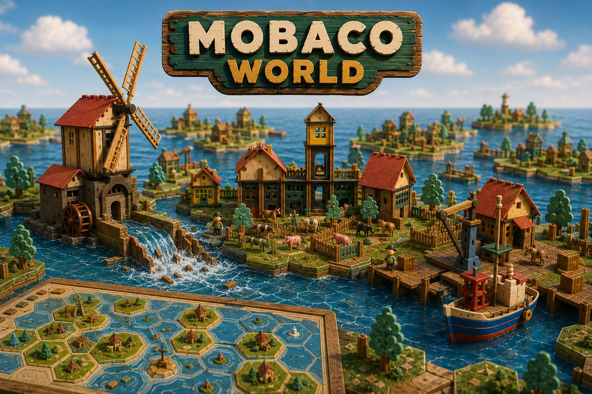
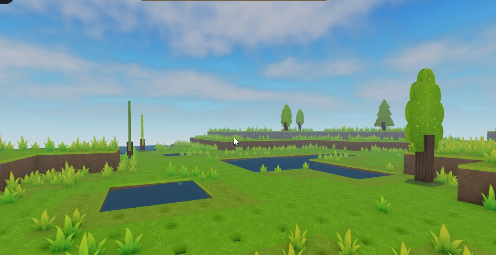
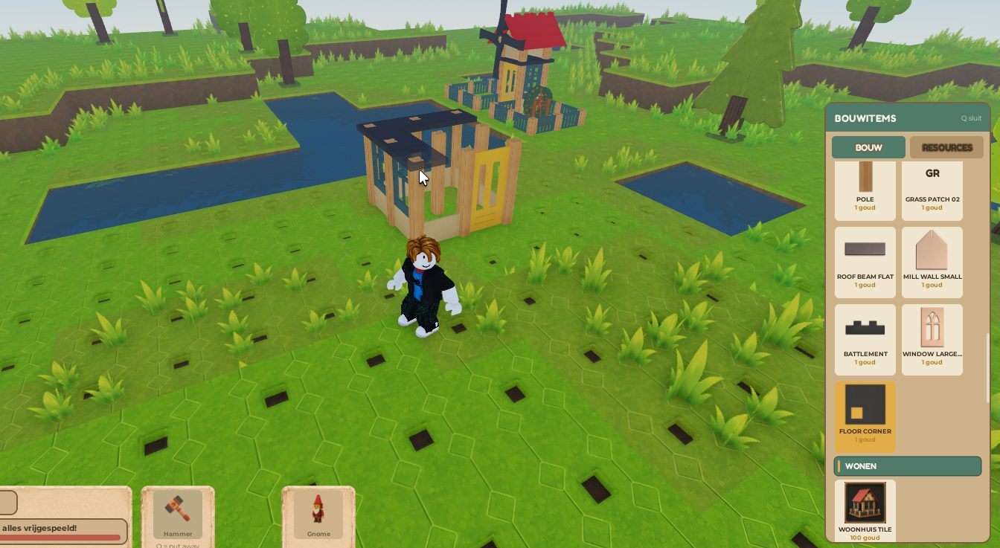
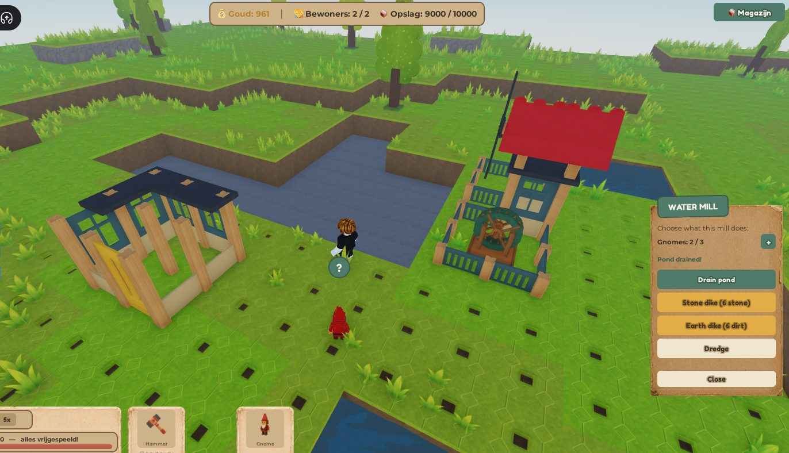
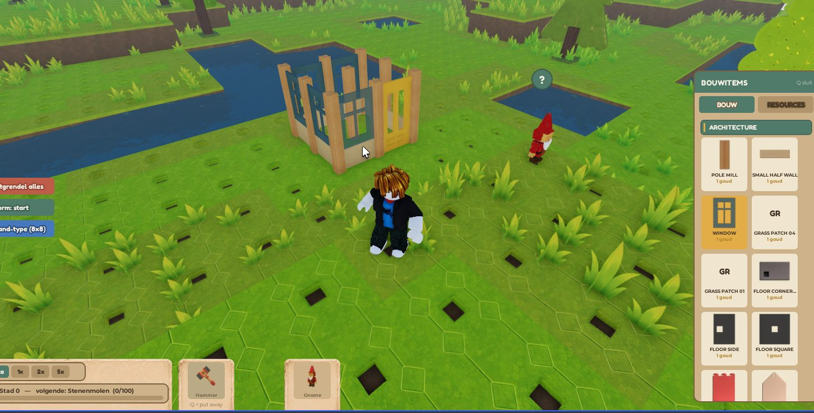
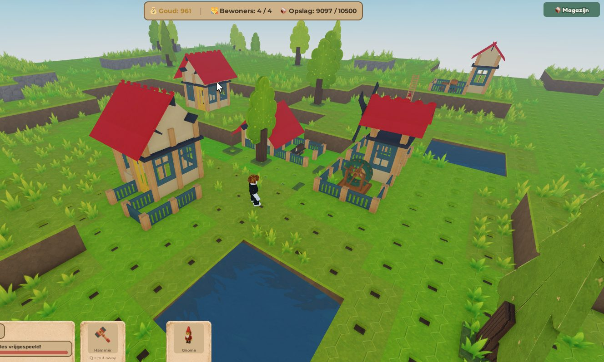

Build freely
Use a modular building system to create settlements with your own rhythm and style.

Alpha access through Patreon
Mobaco World is a modular sandbox game inspired by Dutch landscapes, waterways, polders, dikes, and the classic construction toy spirit that turns imagination into miniature worlds.
Design houses, farms, harbors, windmills, and city districts piece by piece.
Drain lakes, raise new ground, build dikes, and protect your settlements from floods.
Patreon alpha testers help guide balance, usability, features, and release priorities.

Start with open land
Build piece by piece
Reclaim waterFrom nothing to a living world
Mobaco World starts quietly: grass, water, trees, and empty tiles. Then you place the first parts, bring in gnomes, manage storage, reclaim land, and slowly turn a raw landscape into a place with a story.


What is Mobaco World?
Start with a small island and grow it into a living world. Build villages, develop industries, manage resources, create trade routes, and shape the land itself. There are no deadlines, no predetermined paths, and no single correct way to play.
Use a modular building system to create settlements with your own rhythm and style.
Water is not scenery. Dikes, canals, polders, and floods shape everyday life.
Stone, fertile soil, forests, and land are limited. Careless expansion has consequences.
Build ships, discover distant islands, establish outposts, and expand your influence.
Patreon alpha
Alpha access is planned for Patreon members. Your support helps the game move forward, and your feedback helps decide what becomes clearer, deeper, friendlier, and more fun before launch.
Become a member on Patreon to enter the alpha tester community.
Follow development notes, screenshots, test plans, and community calls.
Try alpha versions, report rough edges, and share what feels promising.
Your feedback helps guide systems, balance, onboarding, and future features.
Community first
Some players may build a peaceful countryside village surrounded by fields and gardens. Others may create a maritime trade network stretching across multiple islands. Mobaco World gives you the freedom to build it, shape it, and grow it at your own pace.
Join on PatreonFAQ
Alpha access is planned through Patreon membership. Replace the Patreon link with the final official page once it is ready.
It is a modular sandbox world-builder about reclaiming land, building settlements, managing resources, and exploring islands.
No. You can build a cozy village, focus on industry, explore the ocean, or grow a trade network at your own pace.
That depends on the alpha wave. The sharing rules should be announced clearly before testers receive access.
Ready to help build it?
Join through Patreon to support development, follow progress, and help test the systems that will shape Mobaco World before release.
Join Patreon for alpha access